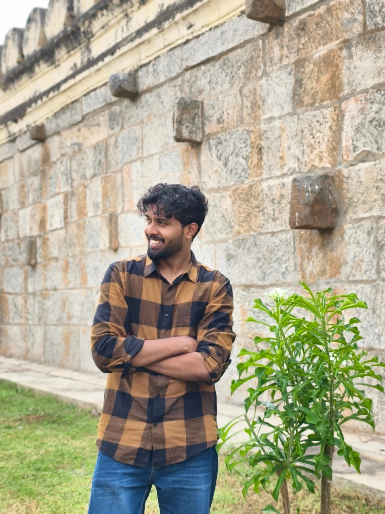

Sep 2025
OCI Generative AI for Browser-Use ↗
Open-source contribution
Added OCI Generative AI as an LLM provider with async inference, structured outputs, documentation, and resilient CI coverage.
HELLO, I’M SANDEEP
I’m Sandeep, a Software Development Engineer II at Oracle. I build reliable enterprise platforms, developer tools, and AI-enabled products.
I enjoy turning complex workflows into useful software through thoughtful APIs, clear interfaces, and dependable engineering.
AVAILABLE FOR OPPORTUNITIESOpen to full-time, part-time, and contract software engineering roles in India, the UAE, Europe, the United States, and with remote-first teams. Also open to founding-engineer and product-focused roles.

Sep 2025
Open-source contribution
Added OCI Generative AI as an LLM provider with async inference, structured outputs, documentation, and resilient CI coverage.
Jan 2025
Developer tool · Oracle
Built an internal AI dashboard using FastAPI and Streamlit to help developers ask questions and retrieve context from code repositories.
2024 — NOW
Enterprise AI platform · Oracle
Contributed backend services for AI agent workflows, including multi-tenant orchestration, rate limits, tool integration, and shareable endpoints.
2024
Personal product
Designed and shipped a creator platform for Instagram automation with rate-limited microservices, a knowledge-base RAG layer, and an Android app.
2023 — NOW
Software Development Engineer II · Bengaluru
Building backend services, platform tools, and AI-enabled workflows for Oracle Fusion Data Intelligence.
2023
Patent
Developed a prompt-driven assistant for task automation and Oracle service workflows; the implementation was patented for its design and utility.
2022
Published research
Published research on efficient convolutional neural networks for skin-cancer image classification and mobile deployment.
2021 — 2023
National Institute of Technology Karnataka
Graduated with an 8.31/10 CGPA and a deeper fascination for systems, algorithms, and applied machine learning.
2021
Before M.Tech
Secured 98.5 percentile with an All India Rank of 1,457.
2021
Academic project
Built a compact REPL interpreter supporting core Lisp forms, arithmetic and trigonometric operators, local/global scope separation, and efficient parsing.
2017 — 2021
Academic projects
Built movie-review summarization with supervised learning and graph ranking, Hadoop/MapReduce stock-volatility analysis, and a Python Fat-tree topology module for NEST.
After B.E.
Online learning
NPTEL Python: 93% and Top 1% nationwide. NPTEL DSA: 100%.
2017 — 2021
JB Institute of Engineering and Technology · Hyderabad
The beginning of a lifelong habit of learning by building.
LANGUAGES
 Python
Python C / C++
C / C++ Java
Java JavaScript
JavaScript TypeScript
TypeScriptBACKEND & WEB
 FastAPI
FastAPI Spring BootSpringμMicronaut
Spring BootSpringμMicronaut Node.js
Node.js Django
DjangoAI & DATA
 LangChain
LangChain PyTorch
PyTorch Pandas
Pandas NumPyMatplotlib
NumPyMatplotlibPLATFORM & CLOUD
 Docker
Docker RabbitMQ↗CI / CD
RabbitMQ↗CI / CDDATA & IDENTITY
 MySQL
MySQL MongoDBPPineconeZZilliz⌘OAuth / JWT
MongoDBPPineconeZZilliz⌘OAuth / JWTPRODUCT & MOBILE
 ReactReact Native
ReactReact Native Expo
Expo StreamlitOJOJET
StreamlitOJOJET03 / CONTACT